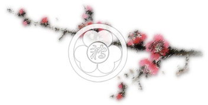
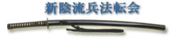

 |
||||||||||
Мнение И.Е. Переверзева о Синкагэ-рюСправка. Игорь Евгеньевич Переверзев. Родился 16 августа 1965 г. Изучает Айкидо с 1988 по 1993 в секции айкидо МГУ под непосредственным руководством г-на Наоми Номура (тогда 3 дан Айкикай). С 1994 года официальный инструктор клуба "Вакикай". Благодаря инициативе г-на Наоми Номура начинает занятия Синкагэрю в 1993 у г-на Ватанабэ Тадасигэ, главы Синкагэрю Хэйхо Маробасикай. С 1998 живет и работает в Японии. Женат, растит 3-х сыновей. Стаж изучения Айкидо 16 лет, 4-дан Айкидо Айкикай. Стаж изучения Синкагэрю 20 лет, степень Кайден. Техника Синкагэрю не просто техника фехтования на мечах, а скорее техника "как остаться живым". Можно сказать в том числе используют и меч. Но полагать, что вот я позанимаюсь Синкагэрю и стану непобедим, будет ошибкой.В школе Синкагэрю показываются формы "катачи", но это только формы. Сначала они чужие и непонятные. Важная задача инструктора - донести "без потерь" и в "читаемом виде" полученные ранее знания (т.е. формы). Задача занимающегося "пропустить через себя" и уже самому "родить" и понимание техники и свою технику. Сама методика преподавания в Синкагэрю хорошо построена. На каждую степень даётся техника для проработки определённого участка тела, баланса, расстояния, угла поворота... и т.д. По мере роста мастерства техника усложняется и дополняется. В основном на тренировке используется фукуросинай, но также есть техника без оружия. Техника с оружием приучает занимающегося к контролю дистанции,.. и т.п... и к более внимательному отношению в том числе и к проведению техники без оружия. Синкагэрю относится к старой технике и даются реальные приёмы - хондэн, но без должного отношения и самостоятельной проработки предыдущих этапов они не будут работать. Это не волшебная техника, это техника в помощь тем кто "работает". Тоже самое, если просто слушать японский язык, а самому не изучать, то никогда и не выучишь… Старая техника отличается от спортивной и тем, что она расчитана не на какой то участок времени, когда человек наиболее физически развит, а на всю жизнь. Cпортивная техника имеет целью выиграть соревнование. Старая техника имеет целью выиграть жизнь. Жизнь напрямую зависела от твоего отношения к технике, тренировкам, понимания и т.п. Нельзя пренебрегать спортивной стороной, это фундамент, от которого надо оттолкнуться, потому что пока есть "физика" есть время подумать, что же будет дальше. А если физика закончилась, а остались только грамоты в шкафу, тогда либо запьют, либо "красивые песни о ки" запоют. Сагава-сэнсэй (Юкиучи Сагава) говорил, что если вы с возрастом становитесь слабее, подумайте, тем ли вы занимаетесь. Один из классических примеров такого отношения к технике - это Поддубный, который в 70 лет выиграл чемпионат мира по борьбе. Сам Сагава-сэнсэй говорил, что он только к 70 годам начал понимать технику. Довольно уникальный человек, один из самых близких учеников Сокаку Такеда. Сагава-сэнсэй продолжал тренироваться до 94 лет, с хорошими результатами, причем с 30 лет на разных тренировках дзюдо, айкидо и прочее, и никому не проигрывал. Важно свое отношение к занятиям. Это отношение вытекает из необходимости. Необходимость возникает из-за (пряника) - "сам пришел", или из-за (кнута) - "привело". Насколько есть необходимость, настолько искренне человек и будет относиться к собственным занятиям. Мне не нравятся формальные тренировки с простым повторением форм, хотя на первом этапе они необходимы. Нужно больше самостоятельно интересоваться разным, стараясь при этом все же не перепрыгивать от одного к другому. Раньше занимались не только каким-то одним видом. Для всестороннего развития изучали разные школы, конечно, те, кто мог заплатить. Обучение было довольно дорогое и не только по боевому исскуству. Например, сейчас чайной церемонией занимаются в основном женщины, а раньше мужчины, те кто воевал, потому что чайная церемония, как и калиграфия, это тренировка или проверка своего внутреннего состояния. Чтобы научиться калиграфии шли к учителю по калиграфии. Чтобы научиться стрельбе из лука шли к учителю по стрельбе из лука, чтобы научиться фехтованию шли к учителю фехтования и т.д. Прорабатывалась как внешняя сторона, так и внутренняя. В начале нарабатывается количество, потом наработанное переходит из количества в качество, потом должна произойти своя оценка качества, чтобы ты мог уже самостоятельно хотя бы начать понимать, что правильно, а что нет. Иначе все время вас так и будут учить, как "правильно дышать". Потом ты снова набираешь количество, но уже с учетом пройденного и с собственными открытыми глазами и своим пониманием. Это и будет твой тренировочный процесс . Подобным образом и был обустроен старый тренировочный процесс. Он состоял из 3-х частей. Обучающийся двигался от 1 ко 2, от 2 к 3, от 3 снова к 1 и т.д. , улучшая и оттачивая каждый раз технику.
Все связано, нет точной границы, все движется (не прямо) по кругу и нет конца. Или другими словами: Век живи - век учись. Идеально, если вначале понять, что такое человек. Тогда будет понятно, что для него необходимо - внешнее и внутреннее. Т.к. человек исходный материал (один), то внешнее и внутреннее неразделимо. Тогда, как внешнее, так и внутреннее возможно тренировать.
Заниматься интересно у знающих и интересных людей. Айкидо было интересно продолжать тренироваться, потому что повстречал Номура-сан. Синкагэрю интересно было заниматься, потому что преподавал Ватанабэ-сэнсэй. Это просто нормальные, порядочные люди. В начале не было своего должного уровня - знаний, практики и т.п. Да и сейчас не намного прибавилось, и если бы не встреча с этими людьми неизвестно какие бы тренировки у меня были теперь. Поэтому для меня тренировки по Синкагэрю и по Айкидо не цель, а средство разобраться… Моё мнение, есть много приёмов, каждый со своим названием 100,50, 10,...А потом остаётся техника без названия - это и есть "твоё". И потом уже идёт опять 10,50, 100....но ты уже понимаешь "откуда у неё (техники) ноги растут"... Когда сам начнёшь по немногу разбираться, тогда появится нтерес и к другим видам. Любой вид - это хорошее владения своим телом и "духом" и знание, когда и как этим пользоваться. Тогда за счёт осознанной практики ты будешь пополнять свой "багаж". Тогда твоя техника станет "живой". Пускай поначалу она и будет слабенькой, но она уже будет "твоя" и ты сам будешь знать в каком направлении её "выращивать". И от того как ты это будешь делать, будет зависеть развитие твоей техники. Уже не от инструктора, а от тебя. Это и будет начало твоей тренировки. Вот пока и всё. |
||||||||||
 |
||||||||||